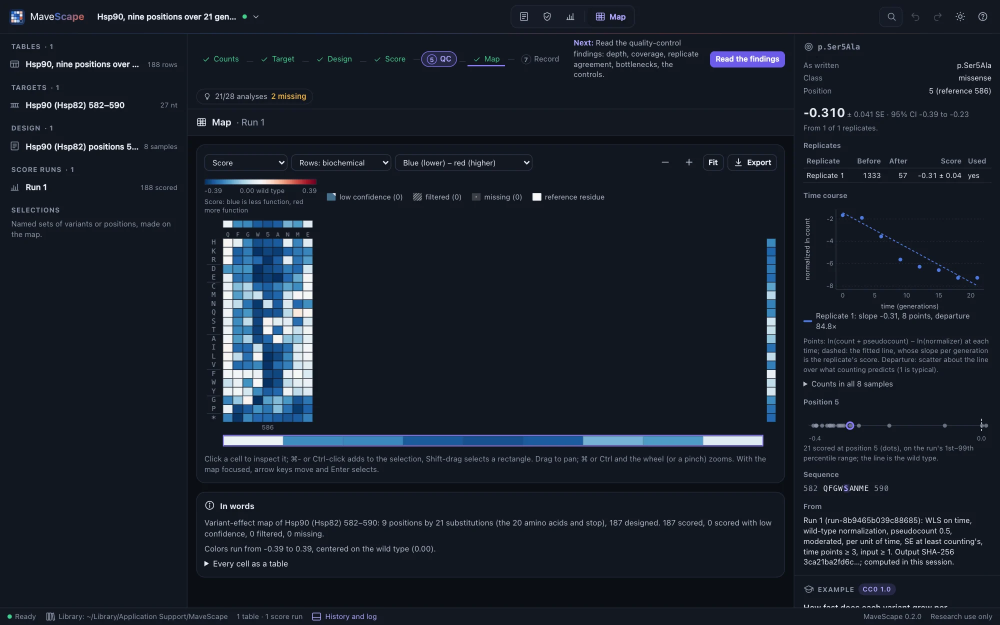
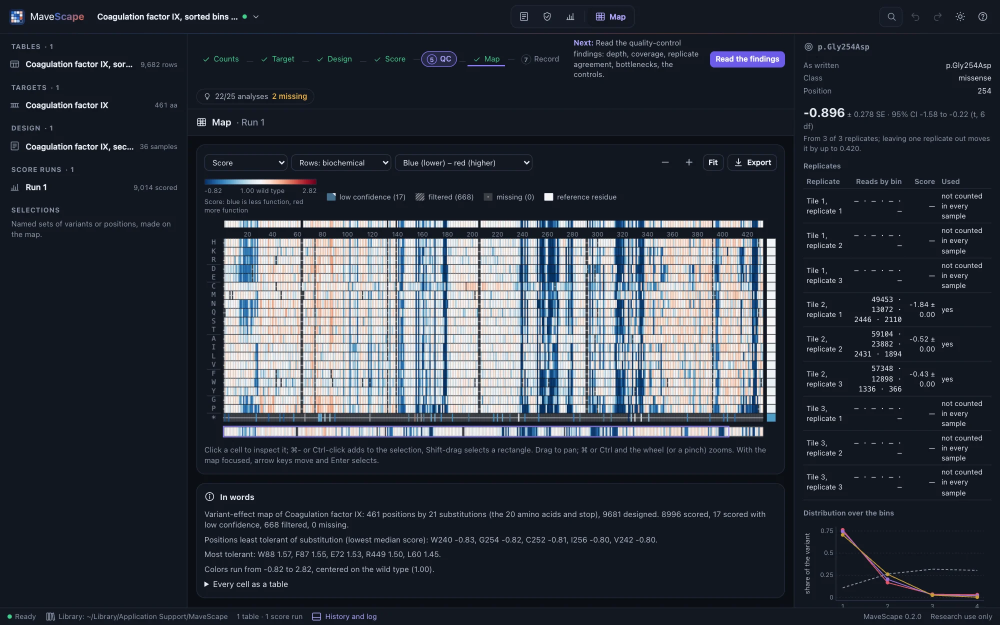
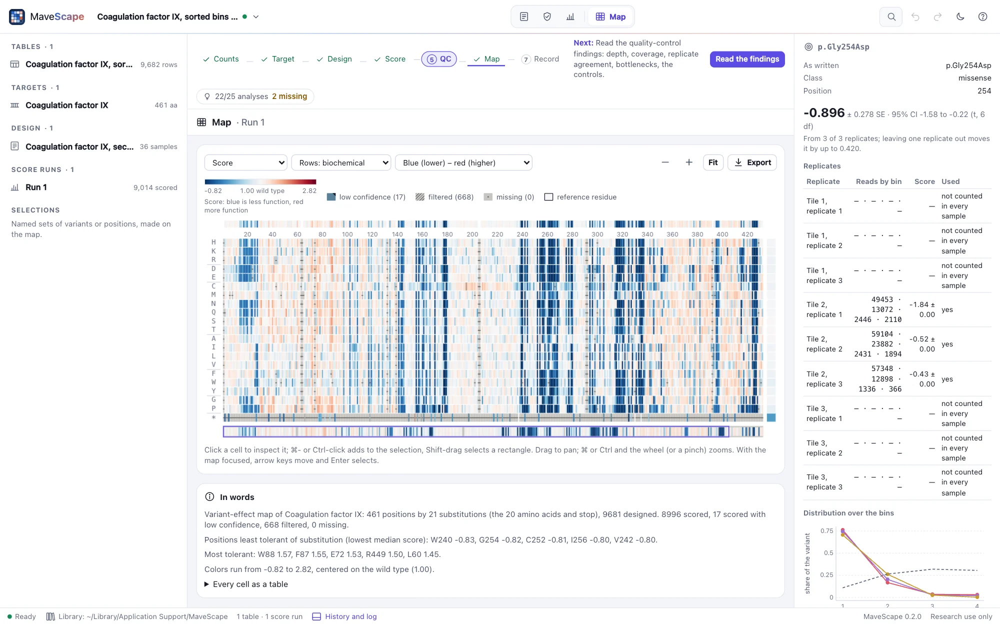
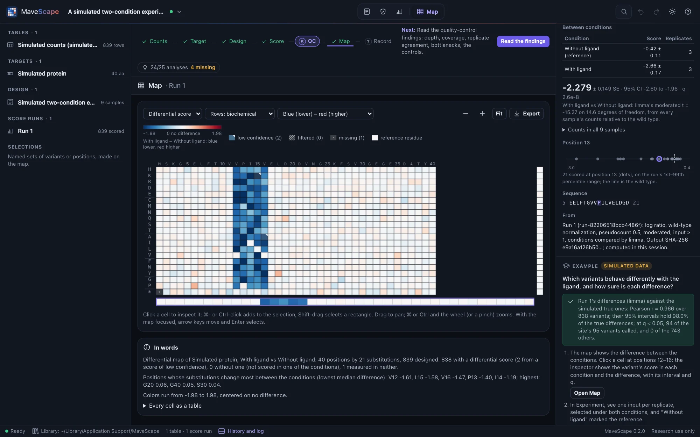
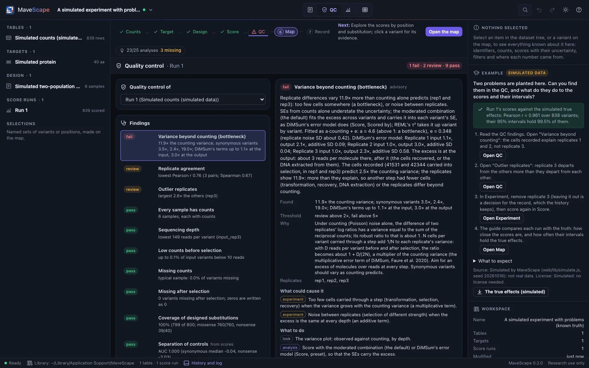

Examples
Nine examples come with MaveScape. Three are published experiments from MaveDB, their counts unchanged: two populations, a growth time series and sorted bins. Six are simulated, with every true effect known: two populations, a time series, a sort, a barcoded library, two conditions from shared inputs, and an experiment with two problems planted. Each opens scored, with its question, guided steps of a few minutes and what to expect, in the inspector.
GRB2 SH3 domain (published)
An abundance selection of every substitution in the 56-residue SH3 domain of GRB2, in three replicates, from the Human Domainome (MaveDB urn:mavedb:00000835-a-1, CC0 1.0; Beltran et al., Nature 2025). The counts are MaveDB's file, unchanged.
The question: which positions does the domain need to fold and stay abundant, and how sure are the scores?


- Quality control passes everything except the variance beyond counting, about 11×: a bottleneck. DiMSum's error model puts it at the input, 20 to 38 times counting, as the Domainome's own analysis found; scored with the DiMSum-compatible preset, every SE carries it.
- Nonsense variants score about −4.6 against the wild type's 0: the assay separates loss of function cleanly.
- The least tolerant positions are buried hydrophobic and glycine residues of the fold: A163, G196, G203 and I183 on GRB2's numbering.
- In Experiment, What the analysis can do: 19 of 25 analyses are ready. The published counts do not say how the library was made or how many cells were carried into selection; with the cells, QC would check the bottleneck it finds against them. The library is protein-level, so there are no synonymous variants to normalize to.
Hsp90 over 21 generations (published)
Every codon at nine positions (582–590) of yeast Hsp90 (Hsp82), selected by growth with the cells' own Hsp90 inactivated and sampled eight times over 21 generations, in one replicate: the first EMPIRIC experiment (MaveDB urn:mavedb:00000011-a-1, CC0 1.0; Hietpas, Jensen and Bolon, PNAS 2011). The counts are MaveDB's file, unchanged.
The question: how fast does each variant grow per generation, which of the nine positions tolerate change, and what can one replicate tell and not tell?

- MaveDB names each codon variant on its own row, and writes the wild type once per position. Read as codon variants, the 568 rows become 188 protein variants: each substitution's codons combined, the wild type's nine identical copies read once.
- The example scores per generation (the times are generations). Positions 585–587 (W, S, A) tolerate almost nothing, 582 and 590 almost everything; synonymous codons score near 0.
- Where the authors fit every time point, the scores follow the published fitness with r 0.95, a median 0.005 per generation apart. The record says its slopes are of log₂ ratios, but they are of natural logarithms, as MaveScape's are. Stops score about −0.32 against the published −0.77: the authors fit null-like variants on their first three time points, before they reach the floor.
- Quality control fails the fit of the time courses, about 44× what counting predicts, so each slope's SE comes from its own residuals. With one replicate, nothing between replicates is assessed: What the analysis can do says so, and that the record gives no MaveDB terms for the assay or the library.
Coagulation factor IX in sorted bins (published)
Every substitution of the 461-residue factor IX, secreted from human cells and displayed on their surface (MultiSTEP), stained at its C-terminal strep II tag and sorted into four bins, in three overlapping tiles of three replicates (MaveDB urn:mavedb:00001200-a-1, CC0 1.0; Popp et al., Nature Structural & Molecular Biology 2025). The counts are MaveDB's file, unchanged.
The question: which factor IX variants are still secreted, and how sure are the scores when the reads far outnumber the cells sorted?


- Positions 146–164 and 299–318 are measured in two tiles; their scores combine both.
- Quality control fails the variance beyond counting, about 2,300×: some 10,000 reads per variant in each bin far exceed the cells sorted. The moderated combination carries the excess into every SE.
- The cells per bin are not assessed, and the bins cannot be scored by maximum likelihood: MaveDB records neither the cells sorted nor the gates, which the sorter's report has.
- With MaveScape's defaults (each replicate scaled to nonsense 0 and wild type 1) the scores follow the published ones with r 0.994. With MultiSTEP's own scale (the lowest 5% of missense at 0) and the replicates' mean, set in the Score view, r 0.9995; on that scale the nonsense median is 0.47.
A simulated experiment (known truth)
A two-population selection of a 40-residue protein in three replicates, simulated by MaveScape (seed 20261009) with every variant's true effect known. It is labeled simulated wherever it appears, and the true effects can be downloaded from its guide.
The question: how close do the scores come to the true effects, and where are they least certain?


- The scores track the true effects closely: the guide shows the correlation (r = 0.99) once the run is scored, and how often the 95% intervals hold the true effects (96%; REML's would hold 93%).
- The least certain scores are the variants with the fewest reads before selection.
- Quality control passes: the counts vary as counting predicts.
A simulated time series (known truth)
A growth selection of a 40-residue protein in three replicates, sampled at five times over eight generations, simulated by MaveScape (seed 20261012) with every variant's true effect known. It opens scored by weighted regression on every time point.
The question: what does a regression on every time point add over the ratio of the first and last, and how linear are the time courses?


- The scores track the true effects (r = 0.99).
- Quality control passes, including the two time-series findings: every fit uses every time point, and the time courses scatter about their lines as counting predicts.
- Scored again by the log ratio of the first and last samples, the scores are a little noisier and their SEs larger: the middle time points carry information.
- The times are in generations, so A score is the change per generation gives each score as a selection coefficient: the whole-course score over the eight generations.
A simulated sort-seq experiment (known truth)
Cells displaying every variant of a 40-residue protein sorted by a fluorescent reporter into four gated bins, in three replicates, simulated by MaveScape (seed 20261013) with each variant's true shift in log fluorescence known. The design records the gates and the cells sorted into each bin.
The question: how do the weighted average of the bins and the maximum-likelihood fit compare, and what limits the measurement: the cells or the reads?


- Scored by the weighted average of the bins, scaled so that nonsense scores 0 and the wild type 1, the scores track the true shifts (r = 0.99).
- Quality control reviews the variance beyond counting, about 2–3×: about 300 cells per variant were sorted against about 320 reads, so the cells, not the reads, limit what is known.
- Scored by maximum likelihood, the scores follow the true shifts more closely, and their SEs account for the cells.
A simulated barcoded library (known truth)
Codon variants of a 30-codon gene in three independently made libraries, each variant carrying about five random barcodes, counted before and after selection, simulated by MaveScape (seed 20261014) with each variant's true effect known. The barcode-to-variant map misses 2% of the barcodes and gives another 2% two variants; 3% of the barcodes were made to be off from their variant by 1.5–3, as a barcode carrying a second mutation would be.
The question: do a variant's barcodes agree, which barcodes are outliers, and does scoring each barcode before combining them beat summing them?
- The map names about 96% of the barcodes; those it gives two variants are left unmapped, and listed at import.
- Quality control reviews the outlier barcodes, about 2% of those compared, and the variance between replicates beyond counting.
- Summed per variant, the scores track the true effects with r = 0.985; each barcode scored and combined by REML, 0.996; summed with the outliers left out, 0.995.
A simulated two-condition experiment (known truth)
Every variant of a 40-residue protein selected from one input library under two conditions, without and with a ligand, in three replicates, simulated by MaveScape (seed 20261015). About 40 cells per variant were transformed and split between the two selections. Missense variants of a five-residue binding site (positions 12–16) lose about 1.5 in log fitness with the ligand only; every other variant behaves the same in both, so the true difference is known.
The question: which variants behave differently with the ligand, and how sure is each difference?

- The differences track the true ones (r = 0.97); limma's moderated t calls 94 of the site's 95 variants at q < 0.05, and none of the other 743.
- Quality control reviews the variance beyond counting in each condition: about 40 cells per variant were transformed. Both conditions grew from the same cells, so the bottleneck cancels from their differences.
- Compared as independent (Enrich2's z), the same differences have SEs about 1.6× larger: the input both conditions share is counted twice.
A simulated experiment with problems (known truth)
The two-population experiment again, with two problems planted: about 50 cells per variant carried into selection, recorded with each input, and a third replicate whose selection was far less even than the others' (seed 20261016). It opens in QC.
The question: can you find the two problems in the QC, and what do they do to the scores and their intervals?

- QC fails the variance beyond counting and reviews the agreement and replicate 3, an outlier. The cells recorded account for the excess between replicates 1 and 2 (2.5× predicted, 2.2× seen); with replicate 3 the replicates differ about 12×.
- From all three replicates the scores track the truth with r 0.96, and their 95% intervals hold 99.5% of the true effects: too wide, since the shared error model takes replicate 3's noise into every variant. DiMSum's terms, distorted by it too, put the excess after selection.
- Remove replicate 3 in the Experiment view and score again: r 0.98, the intervals hold 96%, and DiMSum's terms put the bottleneck before selection, where it was planted. The guide shows both runs against the truth. Leaving a replicate out is a decision for the record: the history keeps it.
Blank layouts
The start page also has three annotated files to fill in with your own data: a count table, a sample sheet and a target FASTA. FORMATS.md describes them and every other file MaveScape reads and writes.